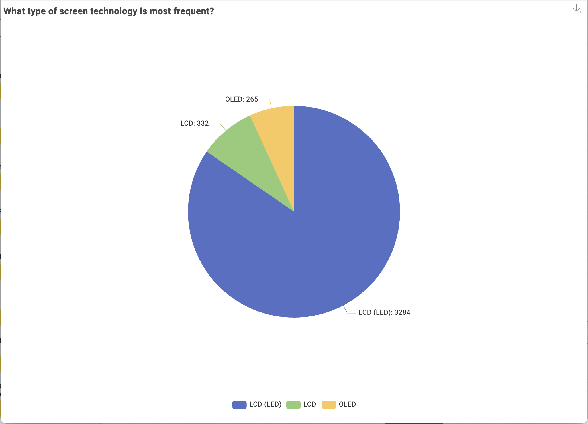
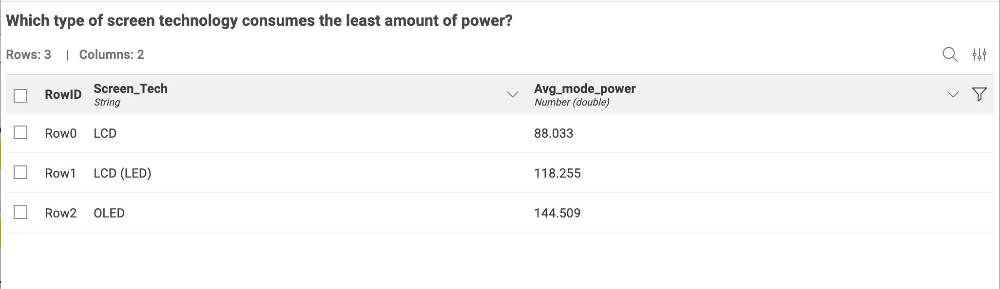
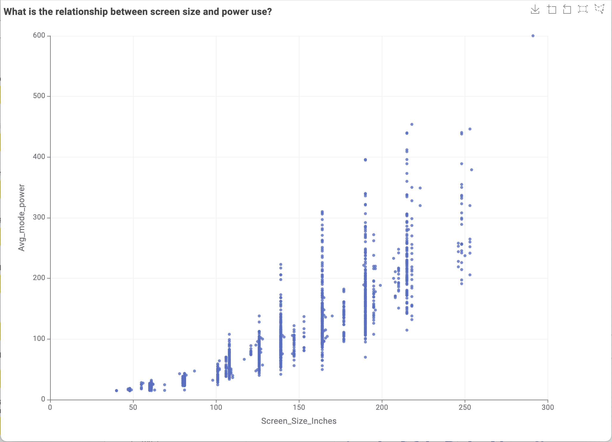

TV ENERGY DATA
This visualisation story is based on energy consumption data for televisions available in the Australian market. The goal is to clearly communicate patterns and insights that help audiences understand and act on energy efficiency trends.
Q1: Who is the audience?
This data story is designed for energy-conscious households, retailers looking to stock efficient appliances, and policy makers interested in market trends. These groups benefit from clear, visual insights that simplify technical energy data into accessible information they can act on. Whether someone is buying a new TV or analysing efficiency patterns, this visualisation helps guide informed decisions.
Q2: What do they want to know?
From an audience perspective, these are the key questions they care about:
- What screen technologies (LED, OLED, etc.) are most common, and how do they differ in energy use?
- Does a bigger screen mean more electricity consumption?
- Which TV brands are more energy-efficient?
- What screen sizes dominate the market?
- Are there hidden patterns that can help people choose better, smarter options?
Q3: How are you going to present this information?
We used KNIME Analytics Platform to clean, group, and visualise the dataset. For each major question, we created a relevant chart — such as pie charts, bar graphs, and scatter plots — and included simple supporting text to explain what the data reveals. This approach follows a visual storytelling method to make the insights more engaging and digestible for a general audience.
Q4: Storyboard
Q1: Screen Technologies
LED dominates, followed by OLED and QLED.
Q4: Display Tech & Power Use
OLED uses more power than LED.
Q5: Screen Size vs Energy Use
Power increases as screen size increases.
About the Data
- Data Source: data.gov.au
- Data Processing: Used KNIME to group, aggregate, and convert numerical values for visualisation. Steps included converting screen sizes, calculating power averages, and grouping by category.
- Privacy: No personal or private information was used. The dataset includes only public appliance specifications.
- Accuracy and Limitations: The data reflects only registered products and may not include unregistered or newly released TVs. Outliers may exist.
- Ethics: This visualisation was produced strictly for educational and non-commercial purposes, respecting all open data usage guidelines.
Final Recommendation
Consumers are encouraged to look for LED televisions from brands that demonstrate lower average power consumption. Medium-sized screens (around 55”) offer a balance between efficiency and viewing experience. Understanding these trends empowers better buying decisions and supports Australia's energy efficiency goals.